library(tidyverse)Data visualization with ggplot2
In this lesson we will work with
ggplot2 to produce scatter plots, boxplots, and time-series plots. We’ll work with various settings and faceting to learn how to build complex and customized plots.
Getting set up
Let’s start by loading ggplot2 an tidyverse (loading tidyverse will load both).
We can then load in the dataset we created last session.
surveys_complete <- read_csv("~/data-carpentry/data/surveys_complete.csv")Rows: 30463 Columns: 13
── Column specification ────────────────────────────────────────────────────────
Delimiter: ","
chr (6): species_id, sex, genus, species, taxa, plot_type
dbl (7): record_id, month, day, year, plot_id, hindfoot_length, weight
ℹ Use `spec()` to retrieve the full column specification for this data.
ℹ Specify the column types or set `show_col_types = FALSE` to quiet this message.Plotting with ggplot2
ggplot2 is a plotting package that
- provides helpful commands to create complex plots from data in a dataframe
- works best with data in the “long” format (i.e., a column for each variable, row for each observation)
- builds graphs layer-by-layer, adding new elements – to allow for flexibility and customization
To build a ggplot, we will use the following basic code/command template for different types of plots
ggplot(data = <DATA>, mapping = aes(<MAPPINGS>)) + <GEOM_FUNCTION>()use the
ggplot()function and bind the plot to a specific data frame using thedataargumentggplot(data = surveys_complete)define an aesthetic mapping (using the aesthetic (
aes) function), by selecting the variables to be plotted and specifying how to present them in the graph, e.g., as x/y positions or characteristics such as size, shape, color, etc.ggplot(data = surveys_complete, mapping = aes(x = weight, y = hindfoot_length))add ‘geoms’ – graphical representations of the data in the plot (points, lines, bars).
ggplot2offers many different geoms; we will use some common ones today, including:geom_point()for scatter plots, dot plots, etc.geom_boxplot()for, well, boxplots!geom_line()for trend lines, time series, etc.
To add a geom to the plot use + operator. Because we have two continuous variables, let’s use geom_point() first:
ggplot(data = surveys_complete, aes(x = weight, y = hindfoot_length)) +
geom_point()
The + in the ggplot2 package is particularly useful because it allows you to modify existing ggplot objects. This means you can easily set up plot “templates” and conveniently explore different types of plots, so the above plot can also be generated with code like this:
# Assign plot to a variable
surveys_plot <- ggplot(data = surveys_complete,
mapping = aes(x = weight, y = hindfoot_length))
# Draw the plot
surveys_plot +
geom_point()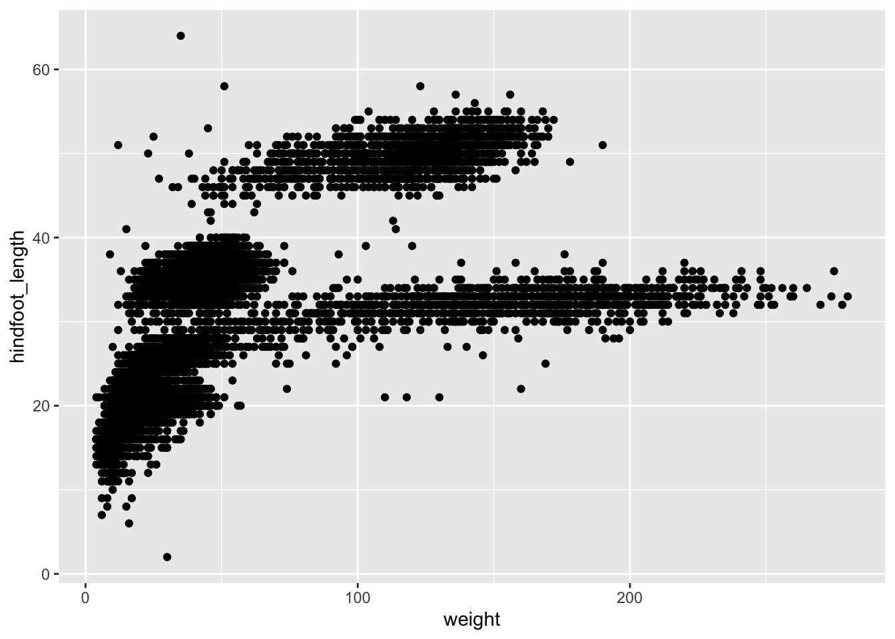
Notes
- Anything you put in the
ggplot()function can be seen by any geom layers that you add (i.e., these are universal plot settings). This includes the x- and y-axis you set up inaes(). - You can also specify aesthetics for a given geom independently of the aesthetics defined globally in the
ggplot()function. - The
+sign used to add layers must be placed at the end of each line containing a layer. If, instead, the+sign is added in the line before the other layer,ggplot2will not add the new layer and will return an error message.
# This is the correct syntax for adding layers
surveys_plot +
geom_point()
# This will not add the new layer and will return an error message
surveys_plot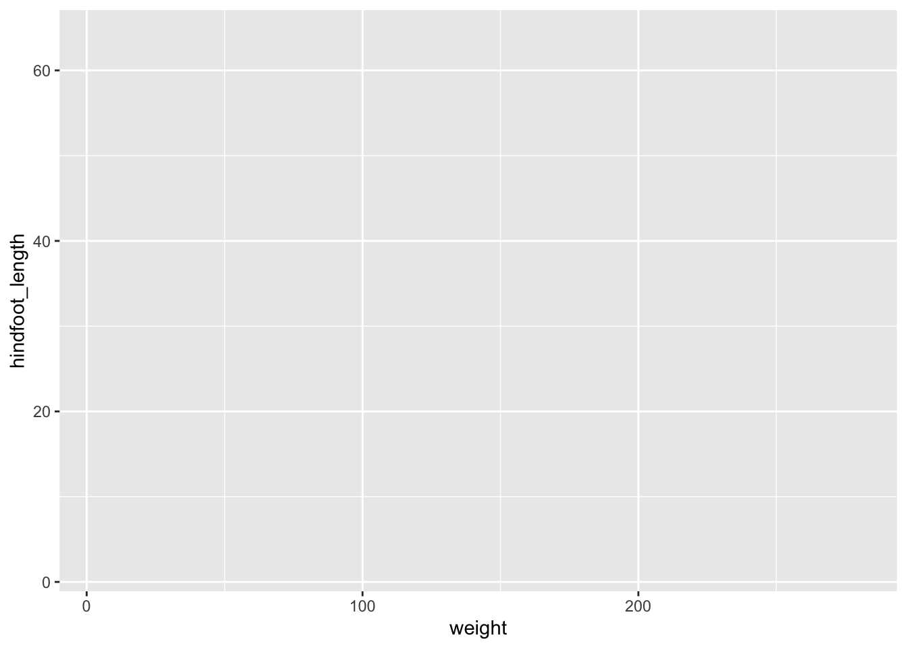
+ geom_point()Error:
! Cannot use `+` with a single argument
ℹ Did you accidentally put `+` on a new line?Challenge
Q&A: With the information/challenge below, answer the following: What are the relative strengths and weaknesses of a hexagonal bin plot compared to a scatter plot?
Scatter plots can be useful exploratory tools for small datasets. For data sets with large numbers of observations, such as the surveys_complete data set, overplotting of points can be a limitation of scatter plots. One strategy for handling such settings is to use hexagonal binning of observations. The plot space is tessellated into hexagons. Each hexagon is assigned a color based on the number of observations that fall within its boundaries. To use hexagonal binning with ggplot2, first install the R package hexbin from CRAN:
#install.packages("hexbin") #already installed, so commenting this out.
library(hexbin)Then use the geom_hex() function:
surveys_plot +
geom_hex()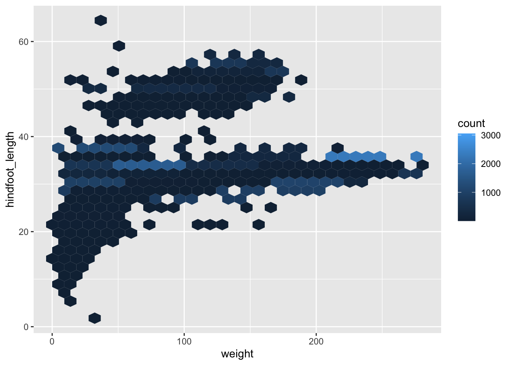
Examine the above scatter plot and compare it with the hexagonal bin plot that you created.
What are the relative strengths and weaknesses of a hexagonal bin plot compared to a scatter plot? Building plots iteratively
Building plots with ggplot2 is typically an interative process.
Let’s define the data we’ll use, lay out the axes, and choose a geom.
ggplot(data = surveys_complete, aes(x = weight, y = hindfoot_length)) +
geom_point() 
Then, we start modifying this plot to extract more information from it. For instance, we can add transparency (alpha) to avoid overplotting:
ggplot(data = surveys_complete, aes(x = weight, y = hindfoot_length)) +
geom_point(alpha = 0.1)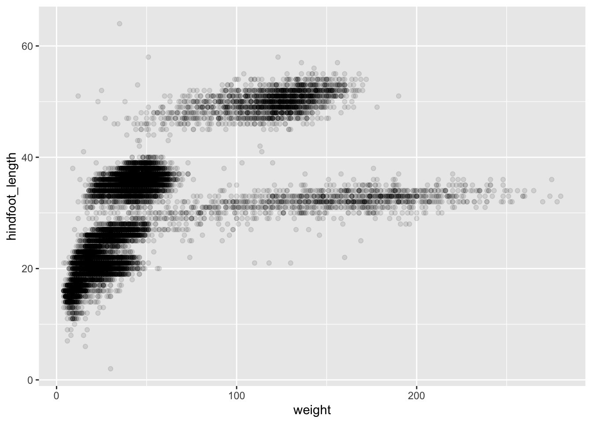
We can also add colors for all the points:
ggplot(data = surveys_complete, mapping = aes(x = weight, y = hindfoot_length)) +
geom_point(alpha = 0.1, color = "blue")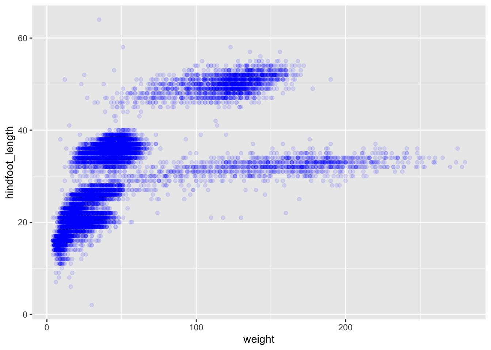
Or to color each species in the plot differently, you could use a vector as an input to the argument color. ggplot2 will provide a different color corresponding to different values in the vector. Here is an example where we color with species_id:
ggplot(data = surveys_complete, mapping = aes(x = weight, y = hindfoot_length)) +
geom_point(alpha = 0.1, aes(color = species_id))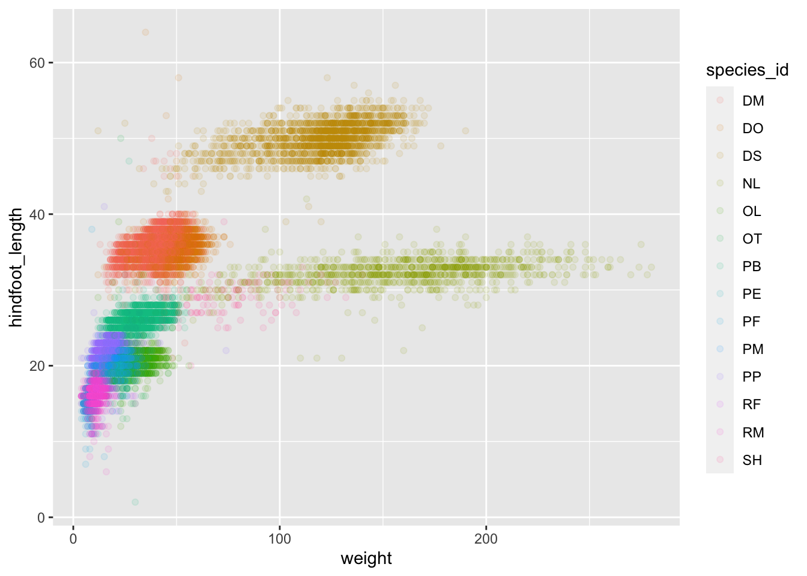
Challenge
Q&A: Use what you just learned to create a scatter plot of weight over species_id with the plot types showing in different colors. Is this a good way to show this type of data?
Boxplots
We can use boxplots to visualize the distribution of weight within each species:
ggplot(data = surveys_complete, mapping = aes(x = species_id, y = weight)) +
geom_boxplot()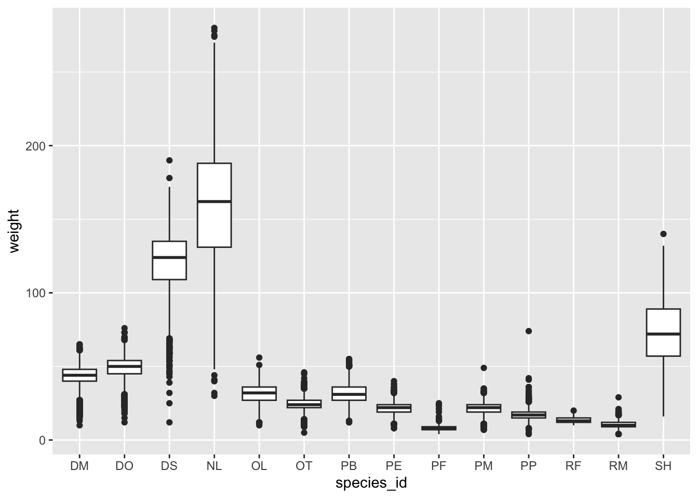
Boxplots will, by default, plot the outliers as points.
What if we wanted all of the data plotted, not just the outliers? We can do this by adding a layer of geom_jitter – but this would mean outliers are shown twice. To avoid this we must specify that no outliers should be added to the boxplot by specifying outlier.shape = NA.
ggplot(data = surveys_complete, mapping = aes(x = species_id, y = weight)) +
geom_boxplot(outlier.shape = NA) +
geom_jitter(alpha = 0.3, color = "tomato")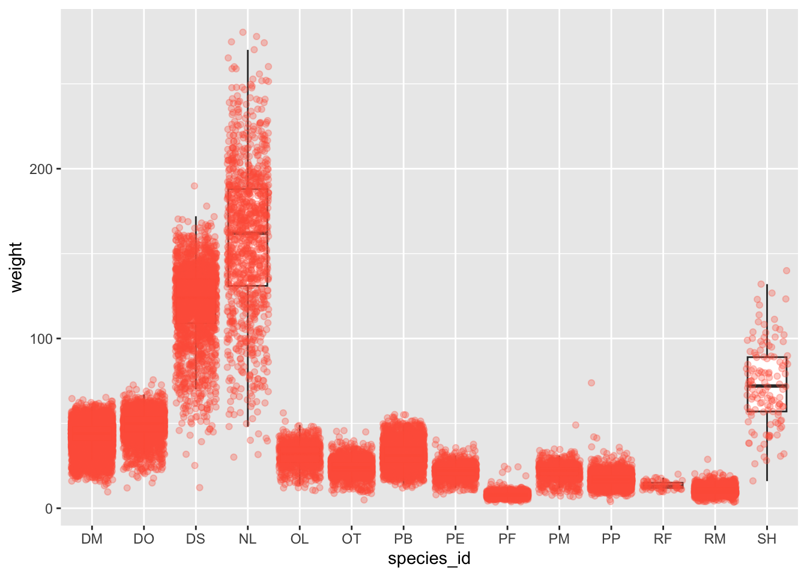
In the plot notice how the boxplot layer is behind the jitter layer?
What do you need to change in the code to put the boxplot in front of the points such that it’s not hidden?
Challenge
Q&A: Replace the box plot with a violin plot; see geom_violin().
Boxplots are useful summaries, but hide the shape of the distribution. For example, if there is a bimodal distribution, it would not be observed with a boxplot. An alternative to the boxplot is the violin plot (sometimes known as a beanplot), where the shape (of the density of points) is drawn.
Replace the box plot with a violin plot; see geom_violin().
Q&A: Represent weight on the log10 scale; see scale_y_log10().
In many types of data, it is important to consider the scale of the observations. For example, it may be worth changing the scale of the axis to better distribute the observations in the space of the plot. Changing the scale of the axes is done similarly to adding/modifying other components (i.e., by incrementally adding commands).
Represent weight on the log10 scale; see scale_y_log10().
Q&A: Create boxplot for hindfoot_length. Overlay the boxplot layer on a jitter layer to show actual measurements.
So far, we’ve looked at the distribution of weight within species. Try making a new plot to explore the distribution of another variable within each species.
Create boxplot for hindfoot_length. Overlay the boxplot layer on a jitter layer to show actual measurements.
Q&A: Add color to the data points on your boxplot according to the plot from which the sample was taken (plot_id).
Hint: Check the class for plot_id. Consider changing the class of plot_id from integer to factor. Why does this change how R makes the graph?
Plotting time series data
Let’s calculate number of counts per year for each genus. First we need to group the data and count records within each group:
yearly_counts <- surveys_complete %>%
count(year, genus)
head(yearly_counts)# A tibble: 6 × 3
year genus n
<dbl> <chr> <int>
1 1977 Chaetodipus 3
2 1977 Dipodomys 222
3 1977 Onychomys 1
4 1977 Perognathus 22
5 1977 Peromyscus 2
6 1977 Reithrodontomys 2Now we’ll visualize the timelapse data can be visualized as a line plot with years on the x-axis and counts on the y-axis:
ggplot(data = yearly_counts, aes(x = year, y = n)) +
geom_line()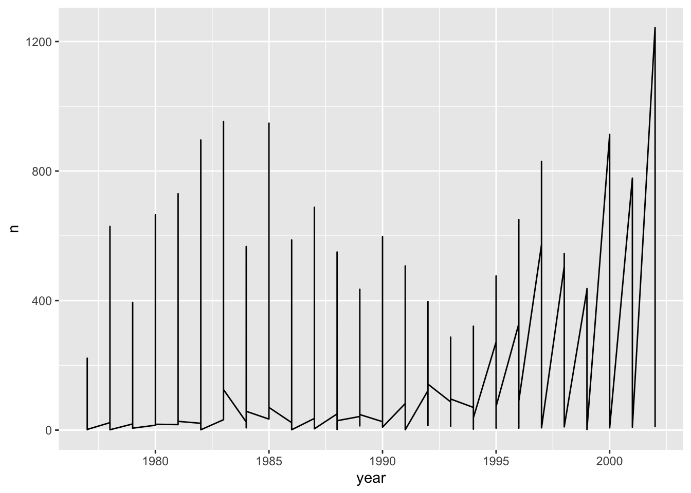
Unfortunately, this does not work because we plotted data for all the genera together.
We need to tell ggplot to draw a line for each genus by modifying the aesthetic function to include group = genus:
ggplot(data = yearly_counts, aes(x = year, y = n, group = genus)) +
geom_line()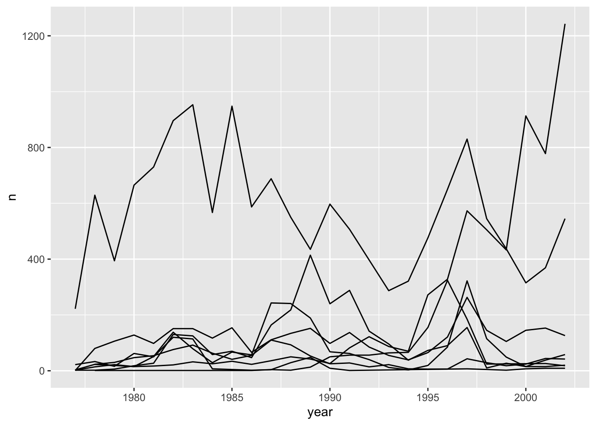
We will be able to distinguish genera in the plot if we add colors (using color also automatically groups the data):
ggplot(data = yearly_counts, aes(x = year, y = n, color = genus)) +
geom_line()
Integrating the pipe operator with ggplot2
In the previous lesson, we saw how to use the pipe operator %>% to use different functions in a sequence and create a coherent workflow.
We can also use the pipe operator to pass the data argument to the ggplot() function.
yearly_counts %>%
ggplot(mapping = aes(x = year, y = n, color = genus)) +
geom_line()
The pipe operator can also be used to link data manipulation with consequent data visualization.
yearly_counts_graph <- surveys_complete %>%
count(year, genus) %>%
ggplot(mapping = aes(x = year, y = n, color = genus)) +
geom_line()
yearly_counts_graph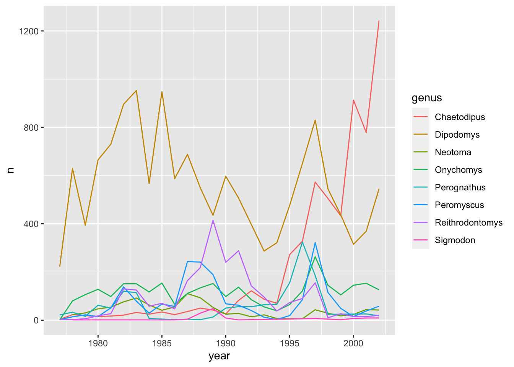
Faceting
ggplot has a special technique called faceting that allows the user to split one plot into multiple plots based on a factor included in the dataset.
Let’s use it to make a time series plot for each genus:
ggplot(data = yearly_counts, aes(x = year, y = n)) +
geom_line() +
facet_wrap(facets = vars(genus))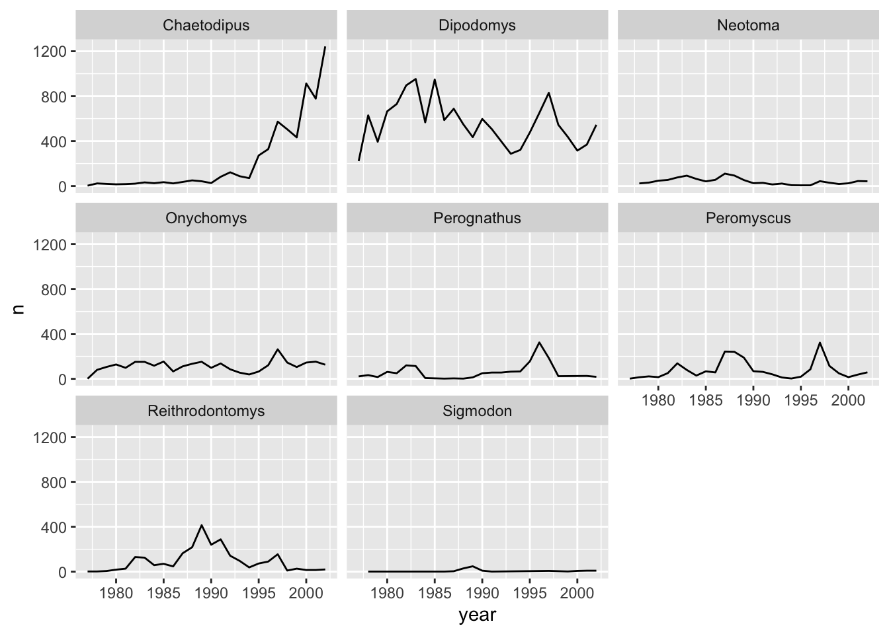
Now we would like to split the line in each plot by the sex of each individual measured. To do that we need to make counts in the data frame grouped by year, genus, and sex:
yearly_sex_counts <- surveys_complete %>%
count(year, genus, sex)We can now make the faceted plot by splitting further by sex using color (within a single plot):
ggplot(data = yearly_sex_counts, mapping = aes(x = year, y = n, color = sex)) +
geom_line() +
facet_wrap(facets = vars(genus))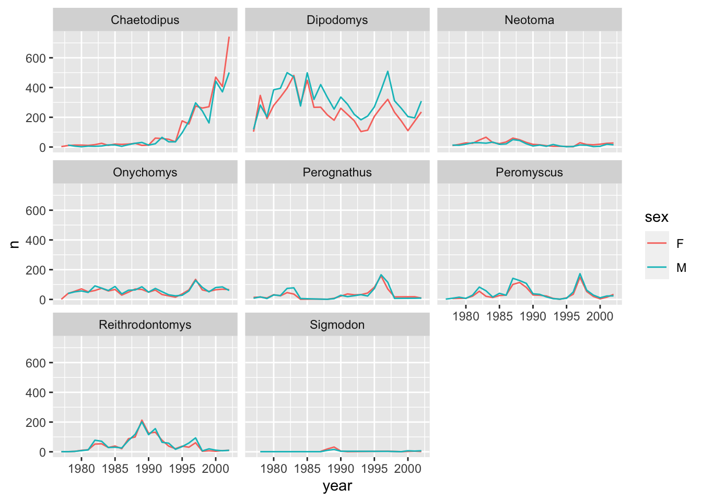
We can also facet both by sex and genus:
ggplot(data = yearly_sex_counts,
mapping = aes(x = year, y = n, color = sex)) +
geom_line() +
facet_grid(rows = vars(sex), cols = vars(genus))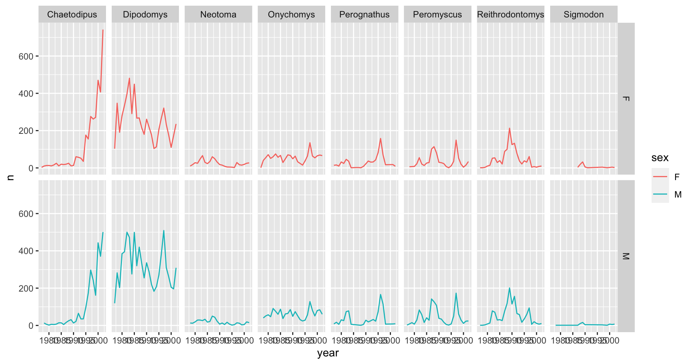
We can also organise the panels only by rows (or only by columns):
# One column, facet by rows
ggplot(data = yearly_sex_counts,
mapping = aes(x = year, y = n, color = sex)) +
geom_line() +
facet_grid(rows = vars(genus))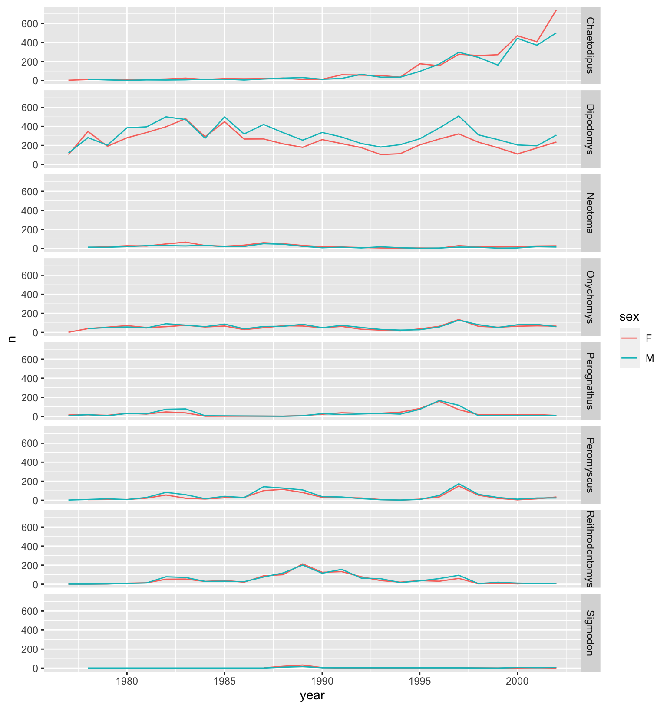
# One row, facet by column
ggplot(data = yearly_sex_counts,
mapping = aes(x = year, y = n, color = sex)) +
geom_line() +
facet_grid(cols = vars(genus))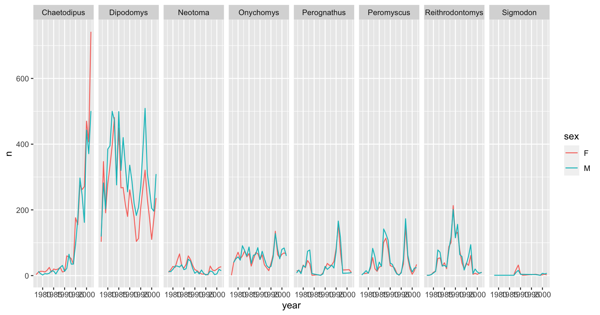
Note
ggplot2 before version 3.0.0 used formulas to specify how plots are faceted. If you encounter facet_grid/wrap(...) code containing ~, please read https://ggplot2.tidyverse.org/news/#tidy-evaluation.
ggplot2 themes
Usually plots with white background look more readable when printed.
Every single component of a ggplot graph can be customized using the generic theme() function, as we will see below. However, there are pre-loaded themes available that change the overall appearance of the graph without much effort.
For example, we can change our previous graph to have a simpler white background using the theme_bw() function:
ggplot(data = yearly_sex_counts,
mapping = aes(x = year, y = n, color = sex)) +
geom_line() +
facet_wrap(vars(genus)) +
theme_bw()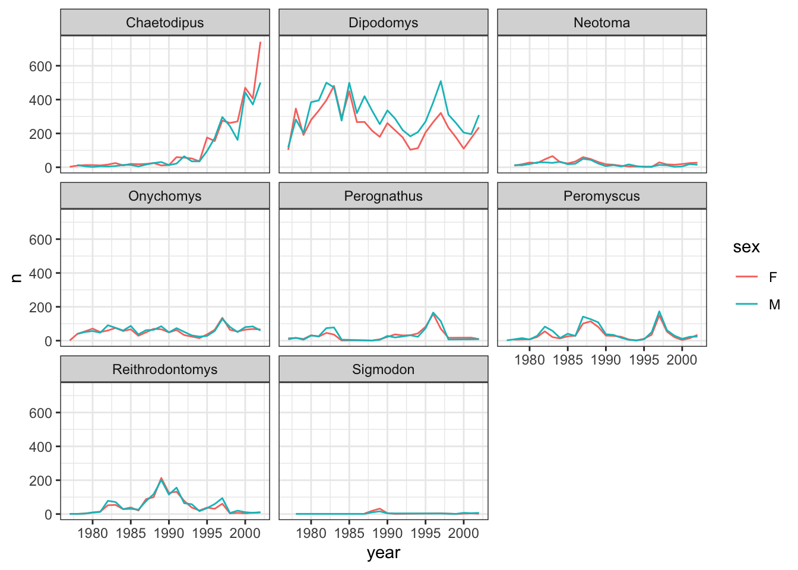
Tip
In addition to theme_bw(), which changes the plot background to white, ggplot2 comes with several other themes which can be useful to quickly change the look of your visualization. The complete list of themes is available at https://ggplot2.tidyverse.org/reference/ggtheme.html. theme_minimal() and theme_light() are popular, and theme_void() can be useful as a starting point to create a new hand-crafted theme.
The ggthemes package provides a wide variety of additional options.
Challenge
Q&A: Create a plot that depicts how the average weight of each species changes through the years.
Customization
Take a look at the ggplot2 cheat sheet, and think of ways you could improve the plot.
Now, let’s change names of axes to something more informative than “year” and “n” and add a title to the figure:
ggplot(data = yearly_sex_counts, aes(x = year, y = n, color = sex)) +
geom_line() +
facet_wrap(vars(genus)) +
labs(title = "Observed genera through time", #labs for labels
x = "Year of observation",
y = "Number of individuals") +
theme_bw()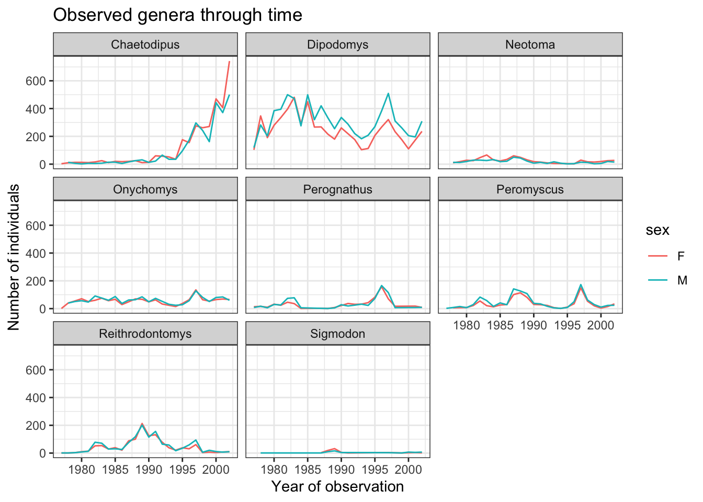
The axes have more informative names, but their readability can be improved by increasing the font size. This can be done with the generic theme() function:
ggplot(data = yearly_sex_counts, mapping = aes(x = year, y = n, color = sex)) +
geom_line() +
facet_wrap(vars(genus)) +
labs(title = "Observed genera through time",
x = "Year of observation",
y = "Number of individuals") +
theme_bw() +
theme(text=element_text(size = 16))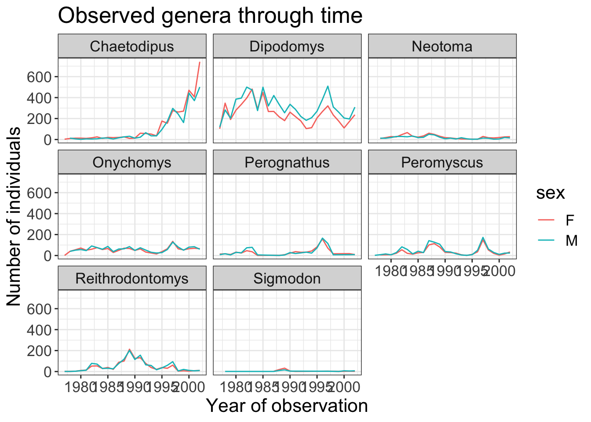
It is also possible to change the fonts of your plots.
Note
If you are on Windows, you may have to install the extrafont package, and follow the instructions included in the README for this package.
Let’s change the orientation of the labels and adjust them vertically and horizontally so they don’t overlap.
You can use a 90 degree angle, or experiment to find the appropriate angle for diagonally oriented labels. We can also modify the facet label text (strip.text) to italicize the genus names:
ggplot(data = yearly_sex_counts, mapping = aes(x = year, y = n, color = sex)) +
geom_line() +
facet_wrap(vars(genus)) +
labs(title = "Observed genera through time",
x = "Year of observation",
y = "Number of individuals") +
theme_bw() +
theme(axis.text.x = element_text(colour = "grey20", size = 12, angle = 90, hjust = 0.5, vjust = 0.5),
axis.text.y = element_text(colour = "grey20", size = 12),
strip.text = element_text(face = "italic"),
text = element_text(size = 16))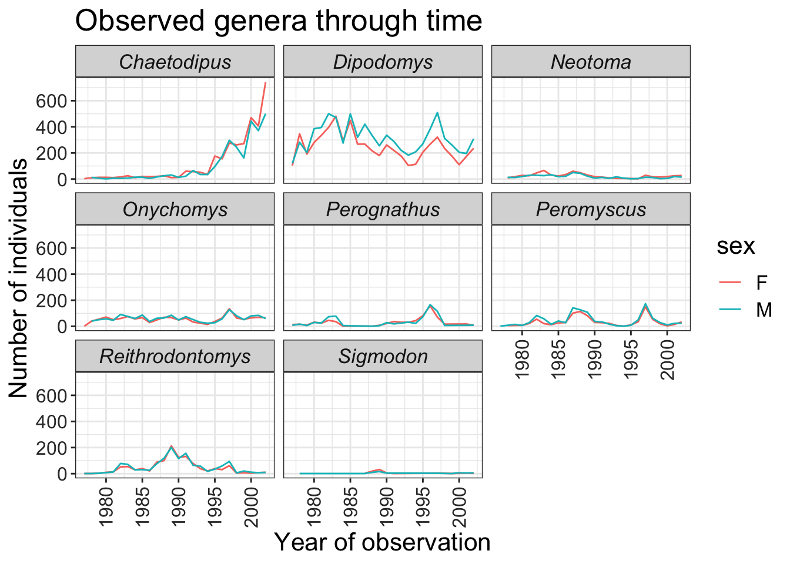
If you like the changes you created better than the default theme, you can save them as an object to be able to easily apply them to other plots you may create:
grey_theme <- theme(axis.text.x = element_text(colour="grey20", size = 12,
angle = 90, hjust = 0.5,
vjust = 0.5),
axis.text.y = element_text(colour = "grey20", size = 12),
text=element_text(size = 16))
ggplot(surveys_complete, aes(x = species_id, y = hindfoot_length)) +
geom_boxplot() +
grey_theme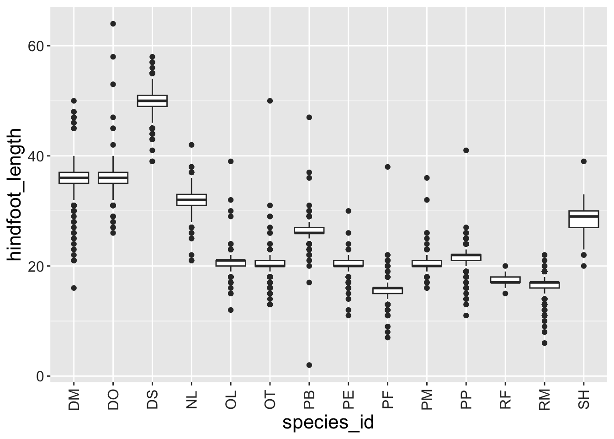
Challenge
Q&A: With all of this information in hand, please take another five minutes to either improve one of the plots generated in this exercise or create a beautiful graph of your own. Use the RStudio ggplot2 cheat sheet for inspiration.
Here are some ideas:
- See if you can change the thickness of the lines.
- Can you find a way to change the name of the legend? What about its labels?
- Try using a different color palette (see https://r-graphics.org/chapter-colors).
Arranging plots
You may want to produce a single figure that contains multiple plots using different variables or even different data frames.
For this, we can use the patchwork package, which allows us to combine separate ggplots into a single figure while keeping everything aligned properly.
Note
Like most R packages, we can install patchwork from CRAN, the R package repository:
install.packages("patchwork")After you have loaded the patchwork package you can use - + to place plots next to each other - / to arrange them vertically - plot_layout() to determine how much space each plot uses
library(patchwork)
plot_weight <- ggplot(data = surveys_complete, aes(x = species_id, y = weight)) +
geom_boxplot() +
labs(x = "Species", y = expression(log[10](Weight))) +
scale_y_log10()
plot_count <- ggplot(data = yearly_counts, aes(x = year, y = n, color = genus)) +
geom_line() +
labs(x = "Year", y = "Abundance")
plot_weight / plot_count + plot_layout(heights = c(3, 2))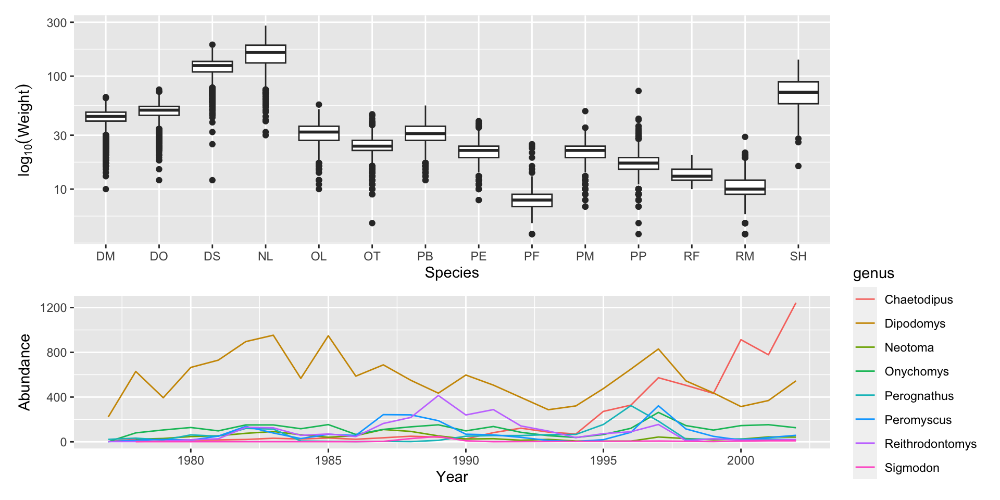
You can also use parentheses () to create more complex layouts. There are many useful examples on the patchwork website
Exporting plots
After creating your plot, you can save it to a file in your favorite format. The Export tab in the Plot pane in RStudio will save your plots at low resolution, which will not be accepted by many journals and will not scale well for posters.
The ggplot2 extensions website provides a list of packages that extend the capabilities of ggplot2, including additional themes.
Instead, use the ggsave() function, which allows you to easily change the dimension and resolution of your plot by adjusting the appropriate arguments (width, height and dpi):
my_plot <- ggplot(data = yearly_sex_counts,
aes(x = year, y = n, color = sex)) +
geom_line() +
facet_wrap(vars(genus)) +
labs(title = "Observed genera through time",
x = "Year of observation",
y = "Number of individuals") +
theme_bw() +
theme(axis.text.x = element_text(colour = "grey20", size = 12, angle = 90,
hjust = 0.5, vjust = 0.5),
axis.text.y = element_text(colour = "grey20", size = 12),
text = element_text(size = 16))
ggsave("name_of_file.png", my_plot, width = 15, height = 10)
## This also works for plots combined with patchwork
plot_combined <- plot_weight / plot_count + plot_layout(heights = c(3, 2))
ggsave("plot_combined.png", plot_combined, width = 10, dpi = 300)
Note
The parameters width and height also determine the font size in the saved plot.
Citations
- Data Analysis and Visualization in R for Ecologists. https://datacarpentry.org/R-ecology-lesson/index.html
- Wickham, H. Tidy Data. Journal of Statistical Software 59 (10). https://10.18637/jss.v059.i10